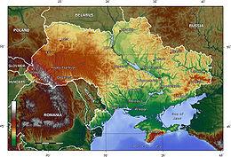
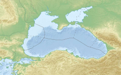

Етимологія слова «Україна» достеменно не відома. Згідно з теорією, якої притримується більшість українських дослідників, «Україна» походить від слів «країна» або «край» — тобто «у» означає «рідний», «свій». Таким чином «україна» — антонім слова «чужина».[14]. Згідно з однією з інших теорій, що сформувалася під впливом польської і російської історіографії, воно означає «околицю» (рос. окранну) або «прикордоння»:
У попередніх століттях для позначення території України вживали слова «Скіфія»; «Сарматія», «Русь», «Рутенія», «Росія». «Малоросія», «Військо Запорозьке», «Гетьманцина» тощо.

Україна розташована в південно-східній частині Європи. Вона має спільні сухопутні державні кордони з Білоруссю на півночі, з Польщею на заході. зі Словаччиною. Угоршиною, Румунією і Молдовою на південному заході та з Росією на сході. Південь України омивається Чорним та Азовським морями. Морські кордони вона має з Румунією та Росією.
Загальна площа України становить 603 628 км2 вона становить 5,7% території Європи і 0,44% території світу. За цим показником вона є другою за величиною серед країн Європи після Росії (або найбільшою країною, яка повністю лежить в Європі). Код країни за системою ISO 3166-1-alpha-2 UA[16]. Територія України витягнута з заходу на схід на 1316 км із півночі на південь на 893 км, лежить приблизно між 52°20' та 44°23' північної широти і 22°25' і 41°15' східної довготи.
Площа виняткової економічної зони України становить 82658 км2 72658 км2

В Україні, яка є унітарною державою, існує єдиний вид територіального устрою: адміністративно-територіальний устрій (поділ). Згідно зі ст. 133 Конституції України систему адміністративно-територіального устрою України складають: Автономна Республіка Крим, області, райони, міста, райони в містах, селища і села. Сучасна система областей та районів України сформована з 1932 року, коли були утворені перші 7 областей замість наявної до того адміністративної системи з 40 округ та 406 районів 1 29936 населених пунктів.